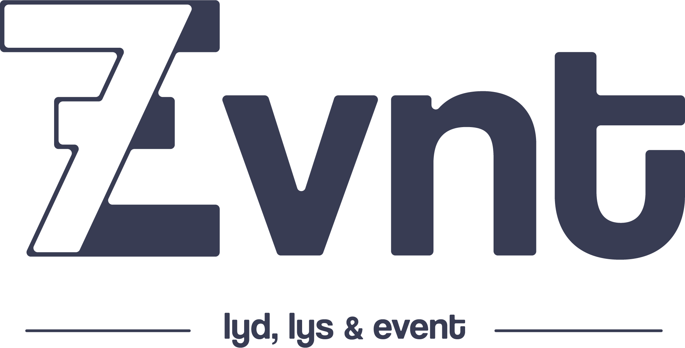

Jeg ble kontaktet av Mats Lauring, co-founder av 7EVNT om potensielt logo oppdrag. 7EVNT er en gründer eventbyrå-startup som håndterer lyd og lys. På det lille budsjettet de hadde ønsker de en grunnleggende grafiskprofil med logo og farger, med mulighet for utvikling til omfattende grafiskprofil. Logen er i bruk i dag på digitale flater og merch.